3. TỪ ĐIỂN ĐIỆN ẢNH BẰNG HÌNH ẢNH
Cinematography
Shot Breakdown
Cinematic Still of [Describe Characters, action, and setting], [Describe Shot Type and Composition], [Describe Style]
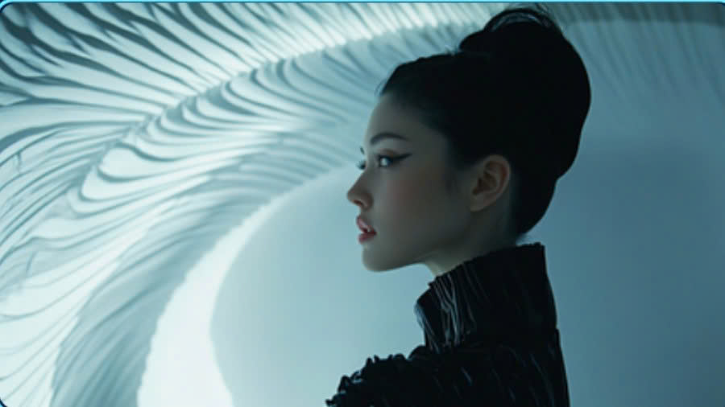
Prompt: a woman in a fashion film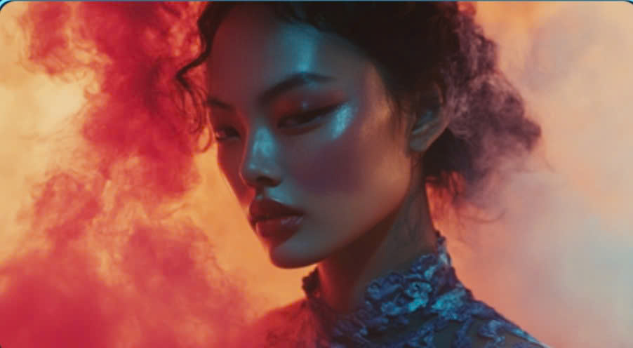
Prompt: a cinematic still of a woman in a fashion filmI. CỠ CẢNH (SHOT SIZE)
Cỡ cảnh quyết định việc lấy bao nhiêu không gian và cơ thể nhân vật vào khung hình. Cỡ cảnh càng hẹp, cảm xúc càng mãnh liệt.
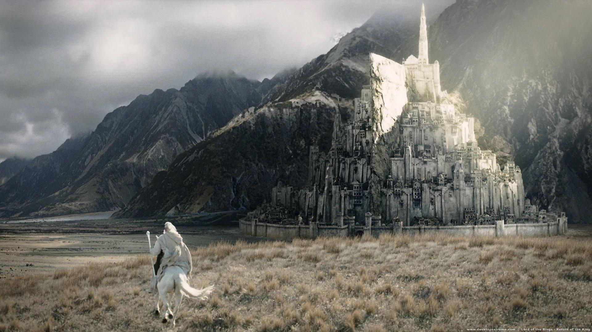
Establishing Shot Cảnh mở đầu
Dụng ý nghệ thuật: Đặt ở đầu một phân đoạn, báo cho khán giả biết câu chuyện sắp diễn ra ở đâu, bối cảnh thời gian nào trước khi đi sâu vào nhân vật.
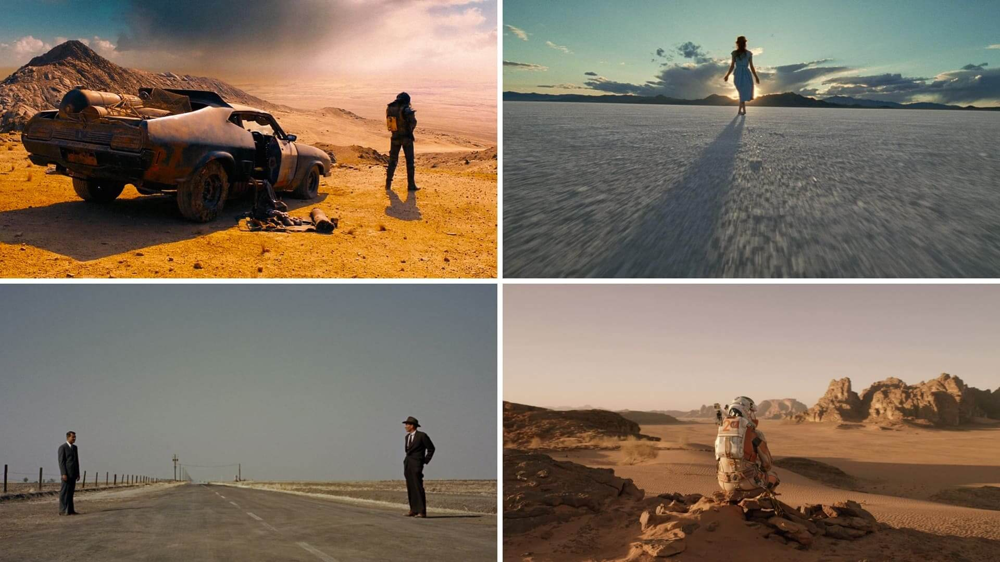
Ultra Wide Shot Viễn cảnh
Dụng ý nghệ thuật: Lấy không gian mênh mông bạt ngàn. Thể hiện sự kỳ vĩ của thiên nhiên, sự hoành tráng của trận chiến, hoặc sự nhỏ bé, cô độc của con người.
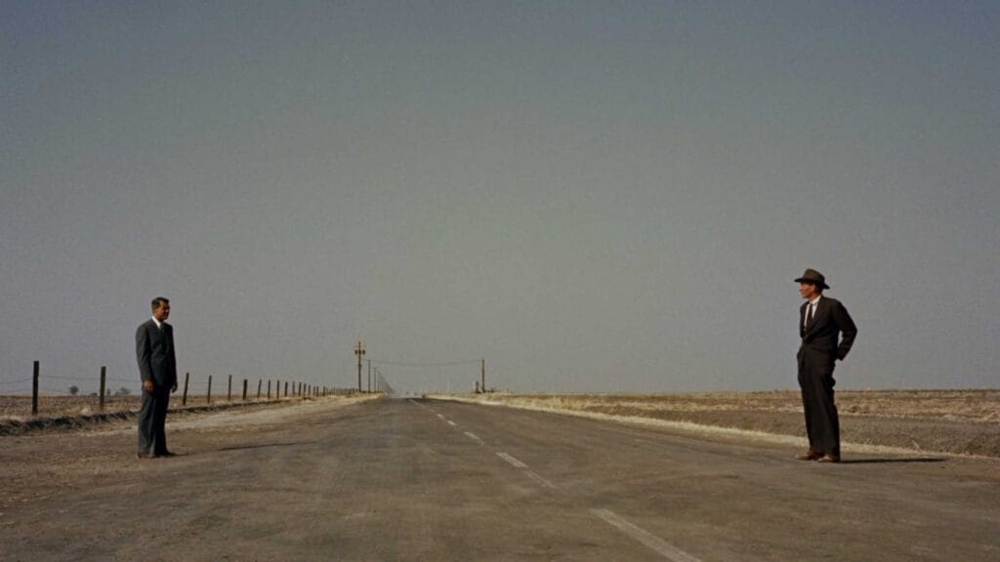
Wide Shot Toàn cảnh
Dụng ý nghệ thuật: Lấy trọn vẹn nhân vật và môi trường xung quanh. Cho thấy mối quan hệ tương tác trực tiếp giữa con người và nơi họ đang đứng.
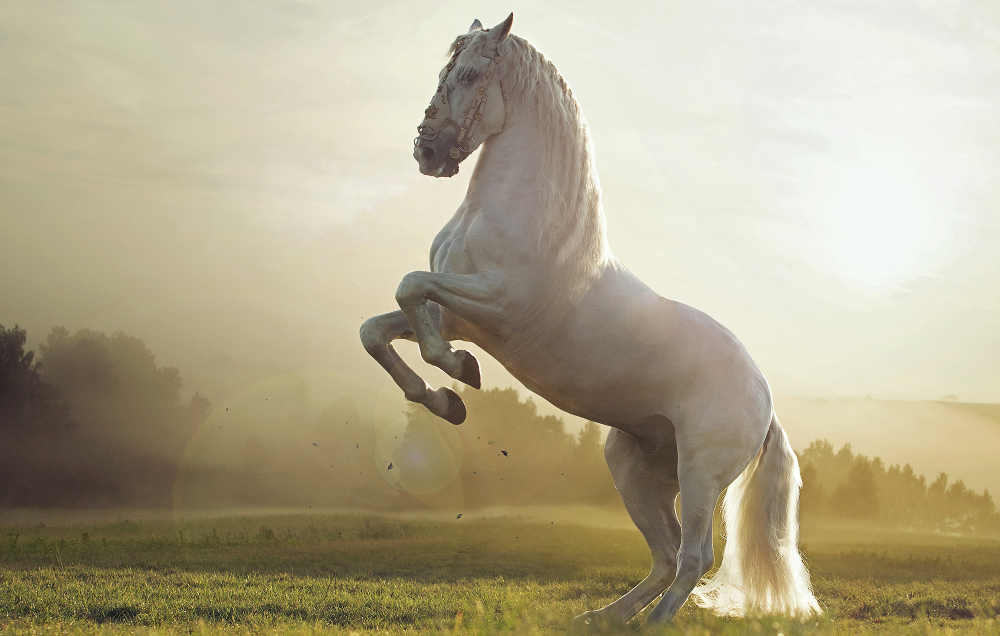
Full Shot / Hero Shot Toàn thân
Dụng ý nghệ thuật: Lấy trọn cơ thể nhân vật từ đỉnh đầu đến gót chân. Tôn vinh vẻ đẹp hình thể, trang phục hoặc sự uy dũng, tư thế sẵn sàng chiến đấu.
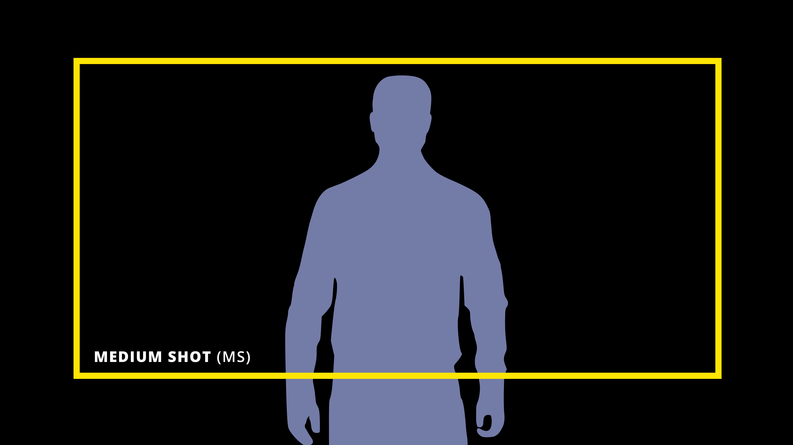
Medium Shot Bán thân
Dụng ý nghệ thuật: Lấy từ eo trở lên. Cỡ cảnh trung tính tự nhiên nhất, dùng rất nhiều để quay hội thoại hoặc sinh hoạt hàng ngày.

Medium Close-Up Cận ngực
Dụng ý nghệ thuật: Cắt từ ngực trở lên. Cân bằng hoàn hảo giữa việc tập trung vào nét mặt và một chút chuyển động vai của diễn viên.
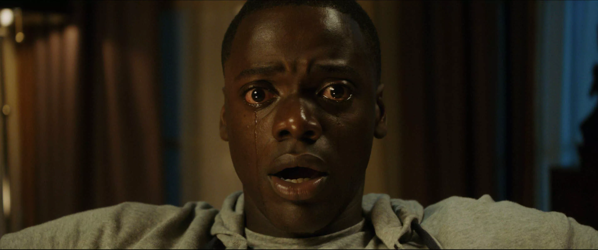
Close-Up Cận mặt
Dụng ý nghệ thuật: Cắt bỏ hoàn toàn bối cảnh thừa. Bắt buộc khán giả phải tập trung 100% vào sự thay đổi cảm xúc trên nét mặt nhân vật.
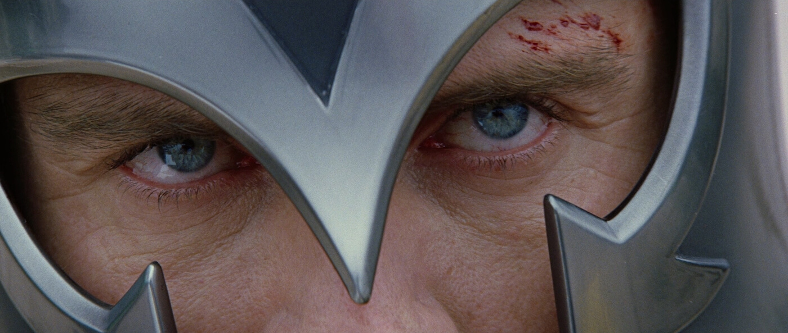
Extreme Close-Up Đặc tả
Dụng ý nghệ thuật: Cực cận vào một chi tiết (ánh mắt, giọt nước mắt, bàn tay siết chặt, đạo cụ). Tạo cảm giác ngột ngạt hoặc soi xét tâm lý dữ dội.
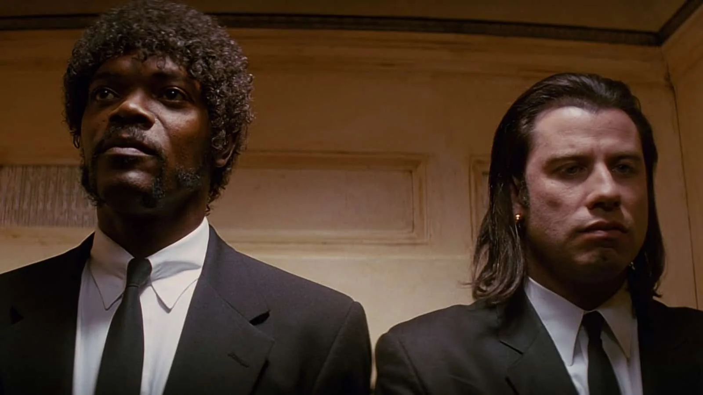
Two Shot Cảnh đôi
Dụng ý nghệ thuật: Gói gọn hai nhân vật vào chung một khung hình để thể hiện sự gắn kết, tình yêu hoặc sự đối đầu trực diện giữa họ.
II. GÓC MÁY (CAMERA ANGLE)
Góc máy tạo ra "quyền lực" và trạng thái tâm lý. Một nhân vật nhìn từ dưới lên sẽ rất khác biệt so với nhìn từ trên cao xuống.
Eye Level Shot Ngang tầm mắt
Góc máy trung lập, đặt ngay ngang tầm mắt diễn viên. Mang lại sự bình đẳng, chân thực, giúp khán giả dễ đồng cảm nhất.
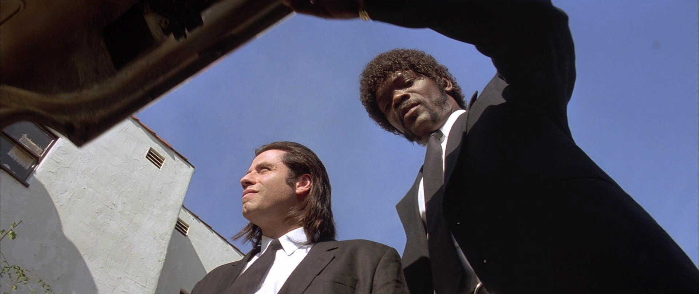
Low Angle Shot Góc thấp
Máy quay đặt thấp hất lên. Biến nhân vật trở nên to lớn, uy quyền, đáng sợ hoặc mang dáng dấp của một người hùng áp đảo.
High Angle Shot Góc cao
Máy quay đặt cao nhìn xuống. Phủ lên nhân vật sự yếu đuối, lép vế, nhỏ bé hoặc cảm giác đang bị mắc kẹt, bị theo dõi.
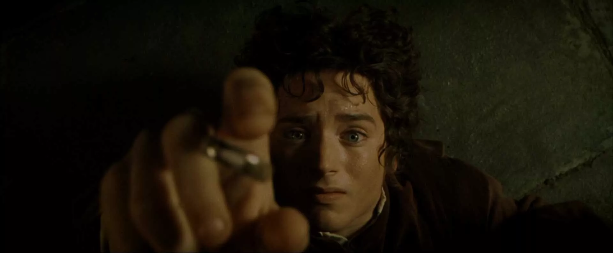
Overhead / Bird's Eye Đỉnh đầu
Quay thẳng đứng từ trên đỉnh đầu xuống. Thường dùng mô tả địa hình chiến thuật, sự cô độc hoặc hàm ý về sự an bài của số phận.
3/4 Angle Góc 3/4
Góc máy đặt hơi lệch 45 độ so với mặt chính diện. Tạo ra khối 3D đổ bóng tự nhiên, làm khuôn mặt có chiều sâu và đậm chất điện ảnh hơn.
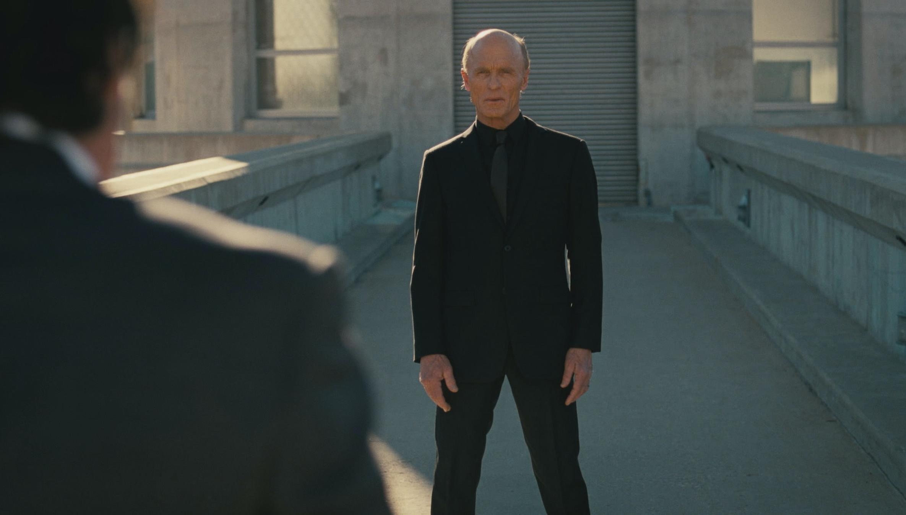
Over the Shoulder Góc qua vai
Nhìn qua vai một người hướng về người đối diện. Kết nối hai người trong cùng không gian, tạo chiều sâu cho cảnh hội thoại.
Dutch Angle Góc nghiêng
Làm nghiêng trục ngang của khung hình. Tạo cảm giác thế giới đang mất cân bằng, điên loạn, bất ổn hoặc dự báo điềm gở.
III. BỐ CỤC (COMPOSITION)
Cách sắp xếp vị trí các đối tượng để dẫn dắt ánh mắt khán giả đến đúng nơi đạo diễn mong muốn một cách nghệ thuật nhất.

Rule of Thirds Quy tắc 1/3
Chia khung hình làm 9 ô. Đặt nhân vật vào các điểm giao cắt. Tạo sự cân bằng, tự nhiên và chừa khoảng không (Look room) cho hướng nhìn.
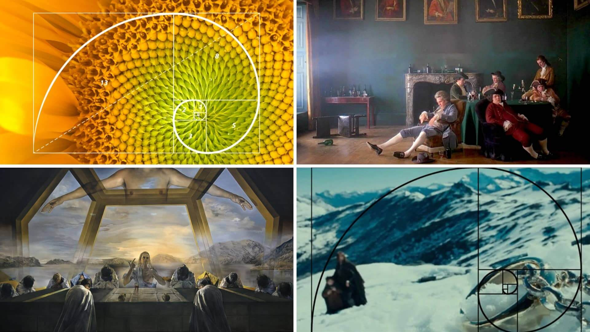
Golden Ratio Tỷ lệ vàng / Fibonacci
Cấu trúc xoắn ốc hoàn mỹ của tự nhiên. Dẫn dắt ánh mắt khán giả cuộn dần vào điểm tụ (nhân vật chính) một cách êm ái và thỏa mãn thị giác nhất.
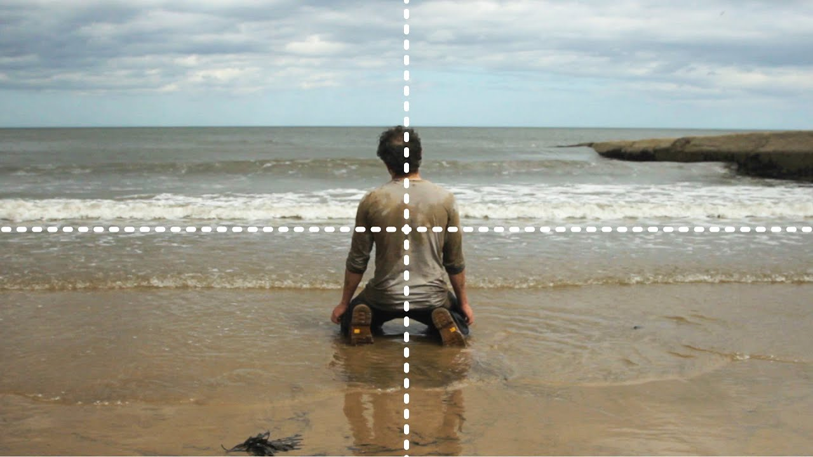
Center Composition Bố cục Trung tâm
Chủ thể đặt chuẩn xác giữa khung hình. Gây sự chú ý trực diện, phá vỡ bức tường thứ 4. Thường dùng trong cảnh bộc bạch nội tâm hoặc uy quyền.
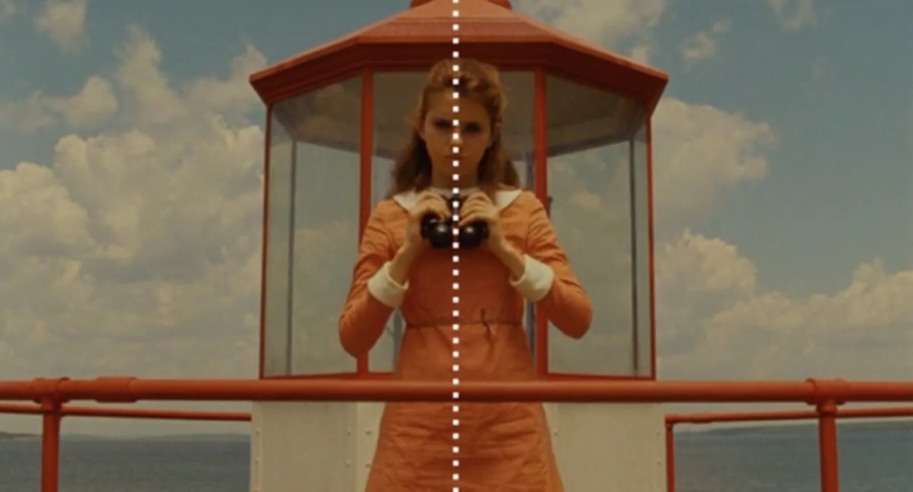
Symmetrical Shot Bố cục Đối xứng
Nửa trái và nửa phải của khung hình giống hệt nhau như soi gương. Tạo vẻ đẹp kiến trúc hoàn mỹ, trang trọng hoặc cảm giác đóng khung cứng nhắc.
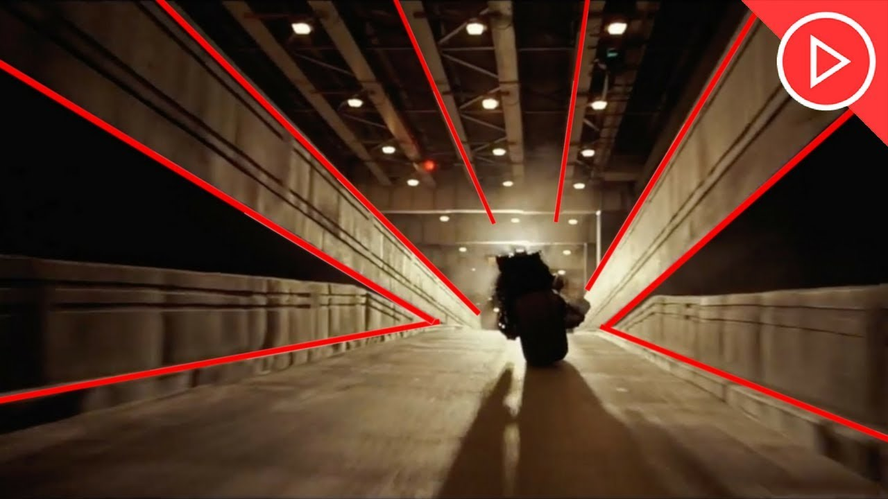
Leading Lines Đường dẫn
Sử dụng các đường nét có sẵn (con đường, hành lang, vách tường) để hội tụ ánh mắt khán giả phi thẳng vào chủ thể.
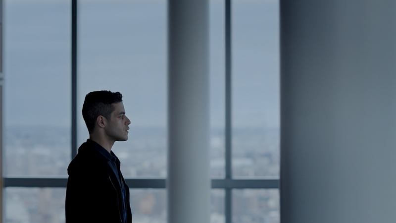
Negative Space Khoảng trống âm ảnh
Cố tình chừa một khoảng trống rỗng khổng lồ xung quanh nhân vật. Hiệu quả tuyệt đối để lột tả sự cô đơn, lạc lõng hoặc bị đè nén.
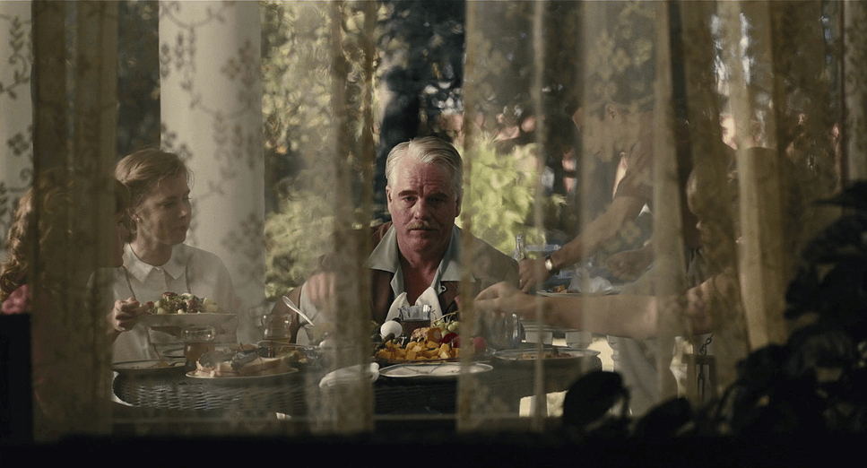
Foreground Framing Đóng khung tiền cảnh
Sử dụng một vật thể mờ ở gần camera (cửa sổ, cành cây, vai người) để bao bọc chủ thể chính, tạo chiều sâu 3D (Depth) cực kỳ rõ rệt.
IV. ỐNG KÍNH & KHẨU ĐỘ (LENS & DOF)
Việc chọn đúng loại ống kính (Focal Length) và độ xóa phông (Depth of Field) tạo ra không gian thị giác của bộ phim.
10mm - 16mm (Góc siêu rộng)
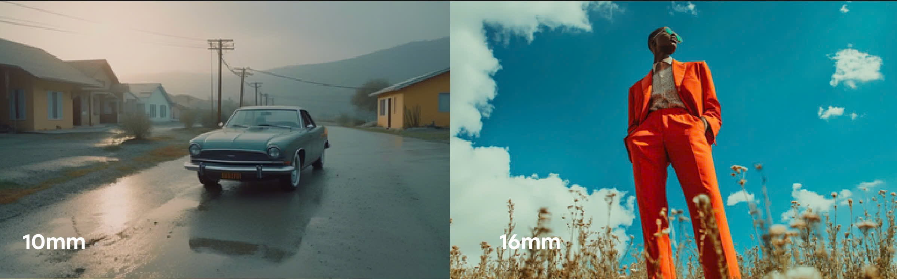
Ultra-wide: Làm cong viền hình nhẹ, ôm trọn không gian bao la. Tạo cảm giác không gian bị kéo sâu, rất kịch tính hoặc dị biệt.
20mm - 35mm (Góc rộng chuẩn)
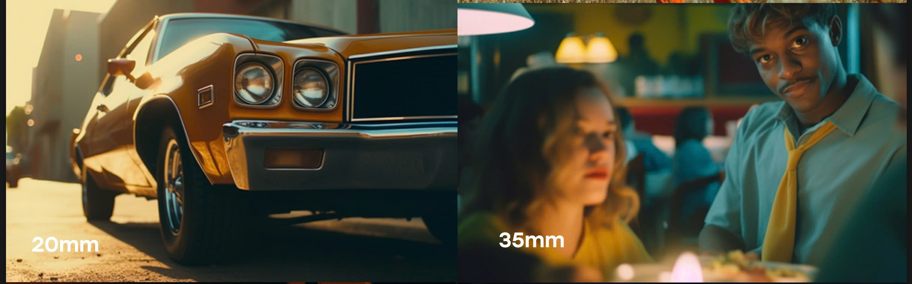
Wide Lens: Tiêu chuẩn điện ảnh. Rất tuyệt vời để kể chuyện vì lấy được cả biểu cảm nhân vật lẫn không gian bối cảnh rõ nét phía sau.
50mm - 85mm (Tiêu chuẩn/Chân dung)
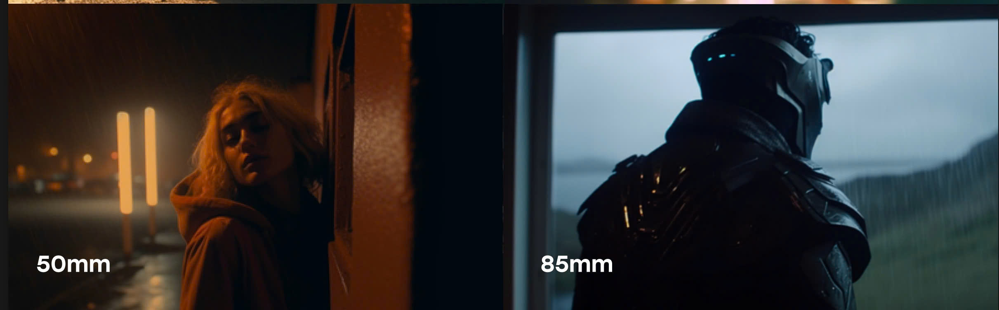
Normal to Portrait: Tương đương mắt người nhìn. Khung hình không bị méo, chuyên dùng để tả thực và quay đặc tả chân dung cực đẹp.
100mm - 200mm (Telephoto/Chụp xa)
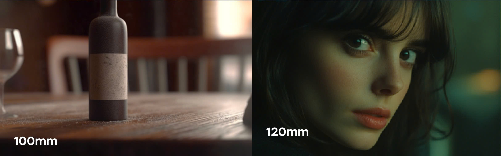
Telephoto: Hiệu ứng "nén không gian". Kéo núi non hậu cảnh sát rạt vào nhân vật. Xóa phông cực gắt, tách lập chủ thể hoàn toàn.
f/1.2 - f/2.0 (Khẩu Lớn)
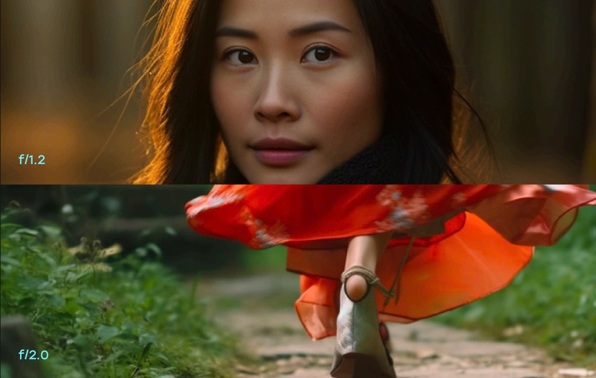
Shallow DoF (Độ sâu trường mỏng): Nhân vật nét căng, phía sau nhòe hoàn toàn (Bokeh). Dùng để giấu bối cảnh xấu và ép nhìn vào cảm xúc.
f/8 - f/11 (Khẩu Trung)
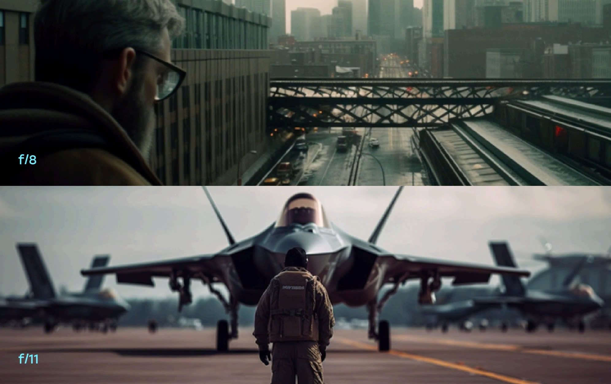
Nét vừa đủ: Lựa chọn an toàn. Thấy rõ nét mặt nhân vật và vẫn nhận diện được môi trường xung quanh họ đang hoạt động (như cảnh đường phố).
f/22 (Khẩu Nhỏ)
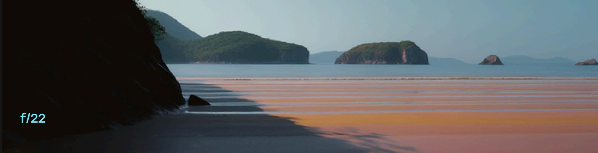
Deep DoF (Độ sâu trường dày): Nét căng từ cành cây gần nhất đến ngọn núi xa nhất. Bắt buộc sử dụng khi quay các cảnh đại cảnh phong cảnh thiên nhiên.
V. NGHỆ THUẬT ÁNH SÁNG (LIGHTING)
Ánh sáng tạo ra Mood. Cùng một nhân vật, thay đổi hướng sáng là thay đổi toàn bộ thông điệp truyền tải.
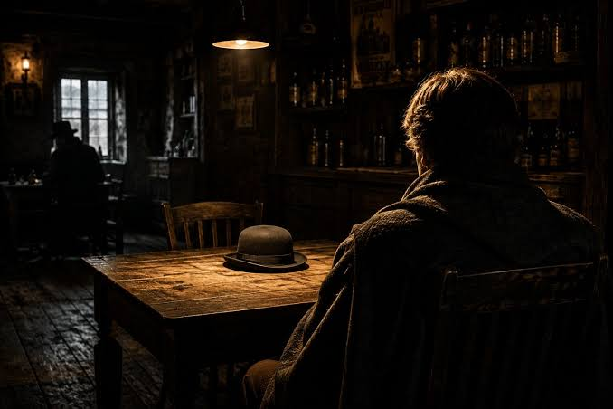
Film Lighting Chuẩn điện ảnh
Đánh sáng nhiều lớp, luôn có ven tóc (backlight) để tách chủ thể khỏi nền, tương phản vùng sáng tối trên khuôn mặt mượt mà.
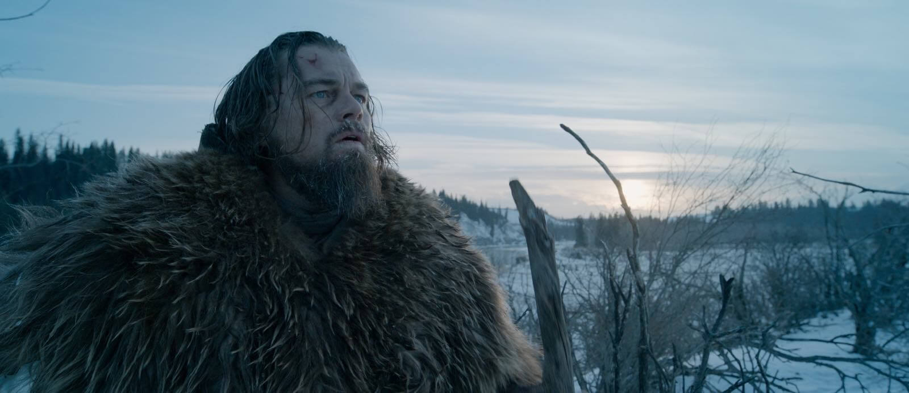
Natural Lighting Tự nhiên
Mô phỏng ánh sáng tự nhiên (cửa sổ, mặt trời hắt vào). Mang lại cảm giác chân thật, đời thường, có phần thô ráp và gần gũi.
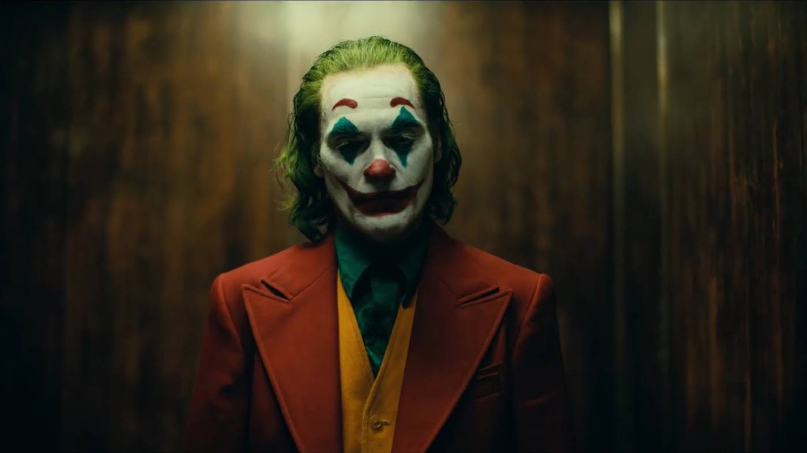
Dramatic / Low-Key Kịch tính
Tương phản cực gắt giữa mảng tối đen đặc và mảng sáng rực rỡ (Chiaroscuro). Gợi sự căng thẳng, nguy hiểm, bí ẩn và u ám.
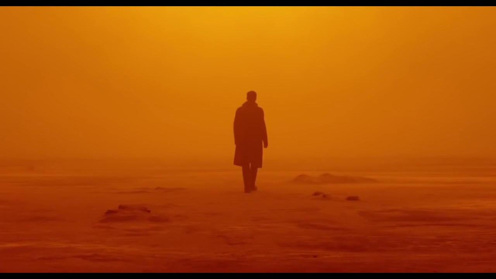
Silhouette Lighting Đổ bóng đen
Đánh sáng ngược cực mạnh từ sau lưng, biến nhân vật thành một cái bóng đen kịt (ngược sáng toàn phần). Cực kỳ nghệ thuật và ẩn dụ.
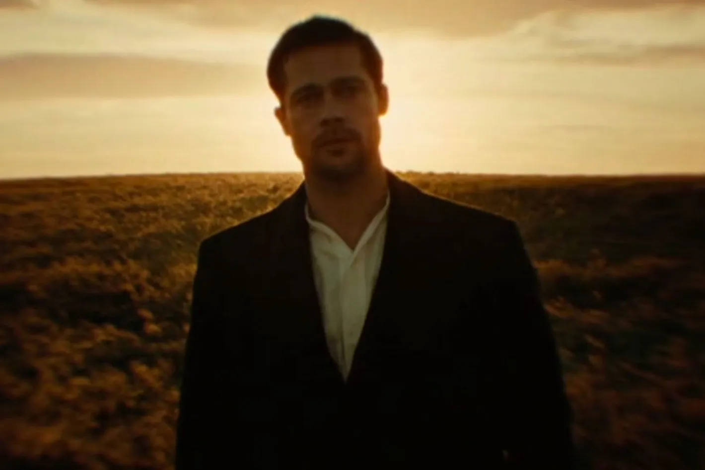
Golden Hour Giờ vàng
Ánh nắng hoàng hôn/bình minh màu cam rực rỡ chiếu xiên ngang, đổ bóng dài. Tạo cảm giác lãng mạn, hoài niệm, bình yên vô cực.